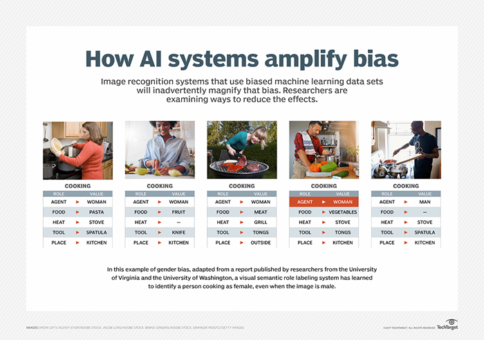
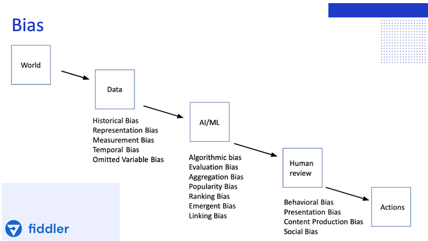
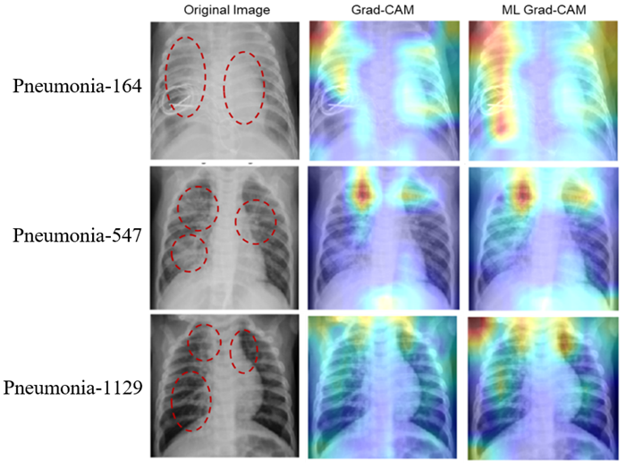
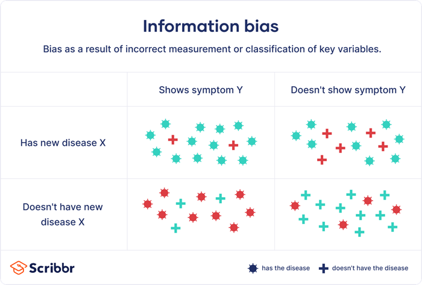
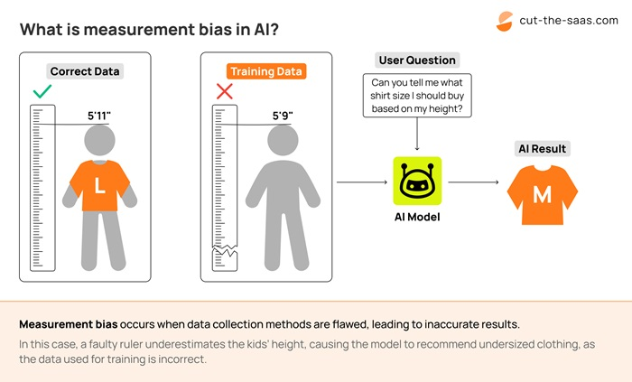
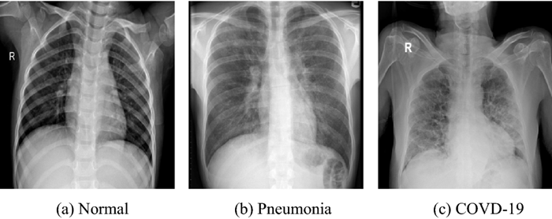

Bias in Artificial Intelligence#
Author: ilia Khosravi Khorashad contact address: ilia.khosravikhorashad@mail.um.ac.ir
Introduction#
In the world of programming and algorithms, specific code is written to solve each problem. However, in artificial intelligence, problems are solved with one algorithm, and the main difference lies in the data used. Therefore in AI, one of the most important factors is having appropriate, sufficient, and classified data.
One of the key issues that needs attention in AI to avoid errors is bias. Bias can occur for various reasons. In some cases, it can be beneficial, such as classifying data based on specific parameters. but, in most cases, bias is undesirable. For instance, in image processing, a person’s skin color should not affect the outcome of the model.

in this example of gender bias, adapted from a report published by researchers deom University of Virginia and the University of Washington, a visual semantic role labeling system has learned to identify a person cooking as female, even when the image is male.
Why Should We Eliminate Bias in AI?#
Eliminating bias in machine learning systems is crucial because they learn from data. If the data contains bias, the results will also be skewed. This is particularly important in supervised learning, where high-quality and unbiased data is essential.
AI systems with bias can cause issues, especially in automated decision-making, autonomous operations, and facial recognition software. For example, Google has misidentified images of minorities, gender discrimination has occurred in credit rating apps, and racial biases have appeared in criminal conviction software.
These errors can harm individuals and businesses, reduce trust in AI technology, and lead to legal and financial problems.

How to Identify Bias in AI#
Identifying and measuring bias in AI is challenging especially with deep learning algorithms that operate like a “black box.” This means it’s difficult to understand which part of the data the model is working on, and only the results are visible. Due to this opacity, it is hard to detect biases. This is why researchers are developing Explainable AI (XAI), aiming to increase transparency in AI models and turn the “black box” into a “white box.”
Example: Image Classification with a Neural Network (Black Box) to an Explainable Model (White Box) Black Box Scenario: Task: An AI model (e.g., a deep neural network) is trained to classify medical images, such as distinguishing between images of healthy lungs and those with pneumonia. Problem: The deep learning model achieves high accuracy but does not provide any explanation about why it classified an image a certain way. Doctors are hesitant to trust the model because they cannot see what features (parts of the image) the model focused on to make its decision. Turning the Black Box into a White Box: To make this model more explainable, researchers can apply various Explainable AI (XAI) techniques that provide transparency. One commonly used method is Grad-CAM (Gradient-weighted Class Activation Mapping). Here’s how this would work:
Model Explanation Using Grad-CAM:
Grad-CAM visualizes the areas of the image that are most important for the model’s decision. After the model classifies an image, Grad-CAM creates a heatmap overlay on the image, highlighting the regions that the neural network paid the most attention to when making the decision. For example, if the model classified an image as showing pneumonia, the heatmap might highlight areas in the lungs where abnormal features (such as fluid buildup) are present. Results of Explainability:
The doctor can now see the exact areas of the X-ray where the AI model detected patterns associated with pneumonia. If the heatmap corresponds to regions where human doctors would also look for pneumonia, it increases trust in the model’s decisions. Outcome:
The model is no longer a black box because users (like doctors) can understand why the AI made its decision. They have a visual explanation of what the model focused on, making the AI more transparent and interpretable. Thus, the black box is effectively turned into a white box.

Bias in data often arises due to the inappropriate selection of training datasets. If the dataset is limited to a subset of the population, the model will provide incorrect results in real-world scenarios. Companies are working to increase diversity in datasets to combat these biases and improve machine learning models.
Types of Biases#
Sampling Bias: Occurs when one feature is overrepresented in data collection compared to others. Sampling should either be random or representative of the population to avoid bias.

Measurement Bias: Occurs when data is not measured or recorded correctly. For example, regional differences in employee salaries could affect data measurement in salary estimation models.

Exclusion Bias: Similar to sampling bias, exclusion bias arises from data that’s inappropriately removed from the data source. When you have petabytes or more of data, it’s tempting to select a small sample to use for training – but in doing so, you might inadvertently exclude certain data, resulting in a biased data set. Exclusion bias also happens when duplicates are removed from data where the data elements are actually distinct.
Prejudicial Bias: Refers to human prejudice. When using historical data to train models, care must be taken to ensure previous biases do not transfer to new models.
Bandwagon Effect: Happens when a trend in data grows, leading to more data collection around that trend. This can overemphasize an idea and introduce bias into models.
Solutions to Eliminate Bias (Increasing Fairness in Models)#
Feature Blinding: Feature blinding involves removing attributes as inputs in models – in other words, blinding the model to specific features or protected attributes such as race and gender. However, this method isn’t always sufficient, as other attributes can remain that correlate with different genders or races, enabling the model to develop a bias. For instance, certain genders might correlate with specific types of cars.
Objective Function Modification: Instead of optimizing for accuracy alone, this method adjusts the model’s objective function to improve fairness.
Adversarial Classification: Adversarial classification involves optimizing a model not just for accurate predictions, but also inaccurate predictions. Though it might sound counterintuitive, poor predictions point out weak spots in a model, and then the model can be optimized to prevent those weaknesses.
These techniques help reduce bias and improve fairness in machine learning models.
Example in production#
Here is an example of AI bias: the problem arises because we have more normal images than pneumonia images in the dataset. Due to the imbalance in the number of images, the model becomes biased in its results.
!pip install tensorflow-addons
import tensorflow_addons as tfa
import tensorflow as tf
from tensorflow import keras
from tensorflow.keras import layers
# from spp.SpatialPyramidPooling import SpatialPyramidPooling # Ilia
from tensorflow.keras.metrics import FalsePositives, FalseNegatives, TrueNegatives, TruePositives
batch_size = 32
img_height = 100
img_width = 143
train_ds = tf.keras.preprocessing.image_dataset_from_directory(
'Data',
validation_split=0.1,
subset="training",
seed=123,
# image_size=(img_height, img_width),
batch_size=batch_size
)
val_ds = tf.keras.preprocessing.image_dataset_from_directory(
'Data',
validation_split=0.1,
subset="validation",
seed=123,
# image_size=(img_height, img_width),
batch_size=batch_size
)
model = keras.models.Sequential([
layers.experimental.preprocessing.Rescaling(1./255),
layers.Conv2D(2, 3, padding='same', activation='relu'),
layers.MaxPooling2D(),
layers.Conv2D(4, 3, padding='same', activation='relu'),
layers.MaxPooling2D(),
layers.Conv2D(8, 3, padding='same', activation='relu'),
layers.MaxPooling2D(),
layers.Conv2D(16, 3, padding='same', activation='relu'),
layers.MaxPooling2D(),
layers.Conv2D(32, 3, padding='same', activation='relu'),
layers.MaxPooling2D(),
tfa.layers.SpatialPyramidPooling2D([1, 2, 4]),
layers.Flatten(),
#layers.SpatialPyramidPooling([1, 2, 4]), # Ilia
layers.Dense(32, activation='relu'),
layers.Dense(1, activation='sigmoid')
])
ERROR: Could not find a version that satisfies the requirement tensorflow-addons (from versions: none)
ERROR: No matching distribution found for tensorflow-addons
---------------------------------------------------------------------------
ModuleNotFoundError Traceback (most recent call last)
Cell In[1], line 2
1 get_ipython().system('pip install tensorflow-addons')
----> 2 import tensorflow_addons as tfa
3 import tensorflow as tf
4 from tensorflow import keras
ModuleNotFoundError: No module named 'tensorflow_addons'
from keras.callbacks import EarlyStopping, ModelCheckpoint, ReduceLROnPlateau
#EPOCHS = 6
#earlyStopping = EarlyStopping(monitor='val_loss', patience=10, verbose=0, mode='min')
#mcp_save = ModelCheckpoint('.mdl_wts.hdf5', save_best_only=True, monitor='val_loss', mode='min')
#reduce_lr_loss = ReduceLROnPlateau(monitor='val_loss', factor=0.1, patience=7, verbose=1, epsilon=1e-4, mode='min')
#model.compile(optimizer='rmsprop',
# loss='binary_crossentropy',
# metrics=['accuracy'])
#history = model.fit(
# train_ds,
# validation_data=val_ds,
# epochs=EPOCHS,
# verbose=1,
# callbacks=[earlyStopping, mcp_save, reduce_lr_loss],
# )
model.compile(loss='binary_crossentropy', optimizer='rmsprop', metrics=['accuracy', FalsePositives(), FalseNegatives(), TrueNegatives(), TruePositives()])
history = model.fit(
train_ds,
validation_data=val_ds,
epochs=3
)
import numpy as np
predictions = np.concatenate(model.predict(val_ds).round())
labels = np.concatenate([y for x, y in val_ds])
test_acc = sum(predictions == labels) / len(labels)
print(test_acc)
print(val_ds.class_names)
model.evaluate(val_ds)
tf.math.confusion_matrix(labels, predictions)
Conclusion#
When the dataset consists of 35% abnormal images and 65% normal images, the model achieves an accuracy of 76%. However, when the distribution is 55% normal images and 45% abnormal images, the accuracy increases to 93%.

Source:#
https://news.mit.edu/2022/fairness-accuracy-ai-models-0720
https://syntheticus.ai/blog/tackling-bias-in-large-ml-models-the-role-of-synthetic-data
Mitchell, T. M. (1980), The need for biases in learning generalizations, CBM-TR 5-110, New Brunswick, New Jersey, USA: Rutgers University, CiteSeerX 10.1.1.19.5466